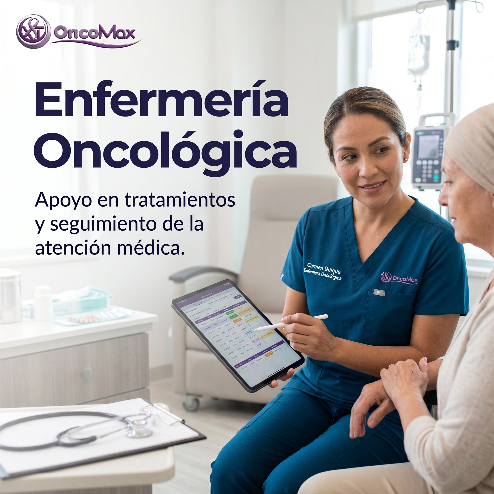
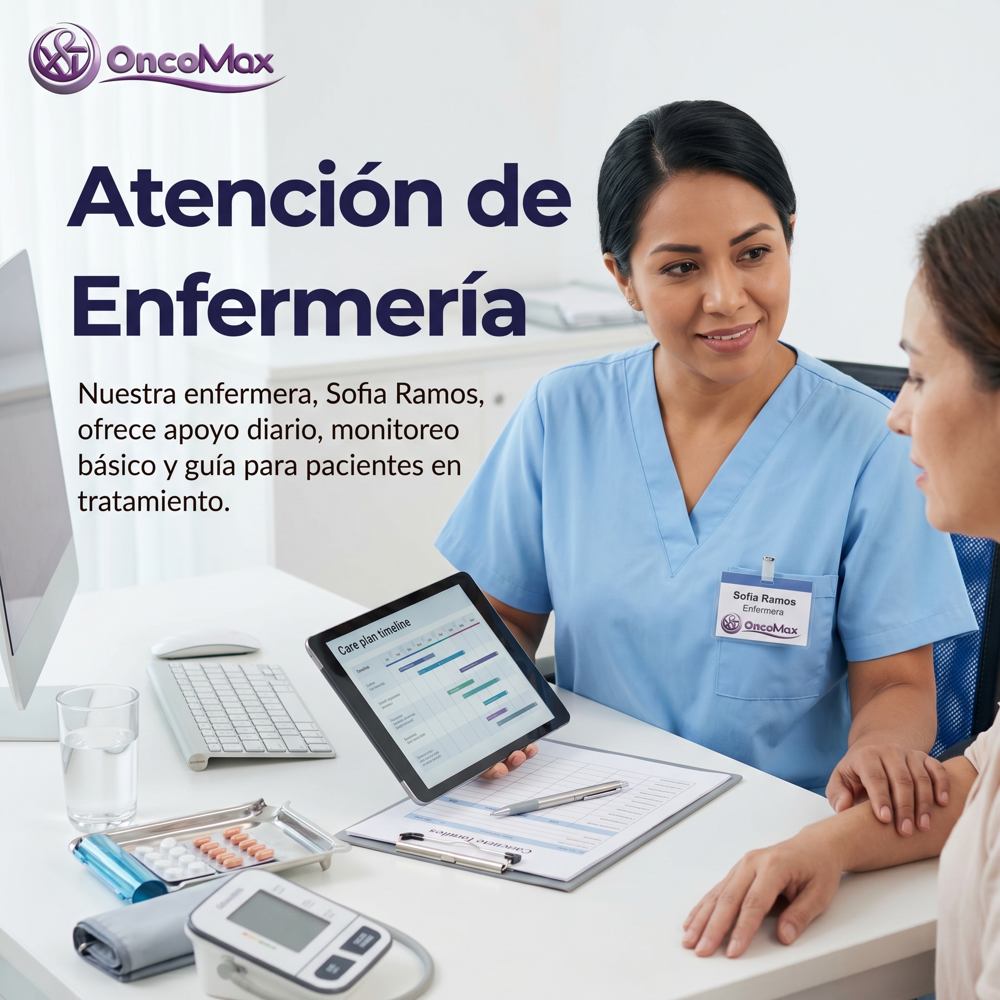

Margarita Rodriguez
Experiencia en cuidado y acompañamiento de pacientes.
Conoce al equipo humano que acompaña a nuestros pacientes.
Experiencia en cuidado y acompañamiento de pacientes.

Apoyo en tratamientos y seguimiento de cuidados medicos.

Acompañamiento diario, control basico y orientacion.
Pasa el mouse sobre la tarjeta del doctor para ver su informacion.

Ver biografia
Especialidad: Oncologia medica.
Historia: Medico demostrativo de la clinica OncoMax, enfocado en orientar a pacientes y familias durante el proceso de atencion.
Enfoque: Explicar los pasos del tratamiento con palabras claras y acompañar con respeto.

Ver biografia
Especialidad: Oncologia pediatrica.
Historia: Profesional demostrativa dedicada al acompañamiento de niños, adolescentes y sus familias.
Enfoque: Atencion humana, comunicacion sencilla y apoyo durante controles medicos.
Trabajo humano con respeto y vocacion de servicio.